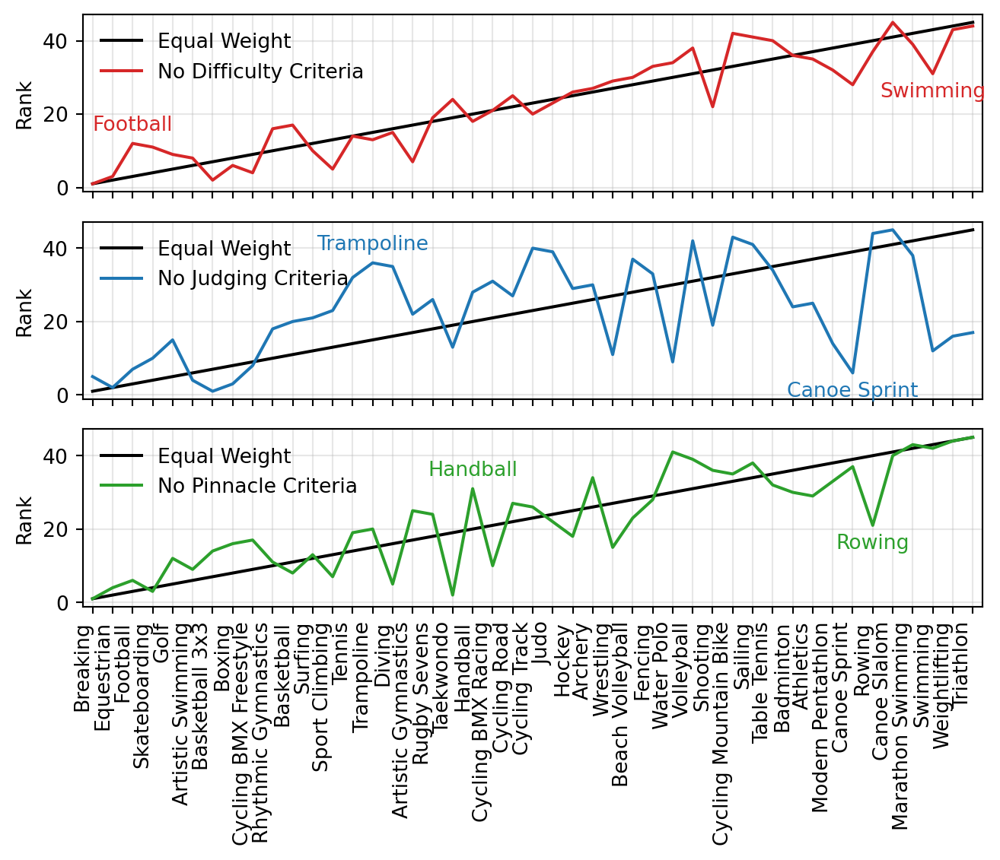

The Olympics are a celebration of human physical achievement. But I simply don’t believe some of the sports should be in it1. In this post, I will present a set of criteria that I believe defines what an Olympic sport should be. I will then use this model to rank the sports in the 2024 Olympics, and see if they pass muster2.
1 Said with absolutely zero authority
2 The conclusions presented should be taken with more than a pinch of salt. I am in no way qualified to make these judgements, and I wouldn’t even say these represent my actual opinions. In effect this post is completely useless, a waste of time, and I’m sorry for making it.
Executive Summary
- Triathlon and Weightlifting are the pinnacle of Olympic sports.
- Football and Breakdancing should be removed from the Olympics with immediate effect.
- If Trampolining was judged completely objectively, it would be comparatively one of the greatest Olympic sports of all time.
After intense internal discussion with close friends and family3, I have settled on the following three criteria that define a real Olympic sport:
3 largely at the Imperial students union
- Is winning the Olympics the pinnacle of the sport?
- Is the sport hard?
- Does it look physically difficult, could anyone compete (at any level)?
- Are there judges?
- Is the sport subjective?
To generate these rankings, I unashamedly used a large-language model to give me a CSV based on these criteria4.
4 Making the rest of the analysis in this post, in effect, invalid.
The bottom five sports are:
- Golf
- Equestrian
- Skateboarding
- Football
- Breaking(/Dance)
As a quick validation, let’s try to justify the bottom five sports based on the criteria:
- Golf: Not the pinnacle of the sport (Masters, US Open, etc.), not hard (large amount of people play).
- Equestrian: Not hard (requires sitting on a horse), relatively subjective (judged on form).
- Skateboarding: Not the pinnacle of the sport (X-Games, generally judged on whether you make a cool video), not hard (anyone can skateboard in a few weeks).
- Football: Not the pinnacle of the sport (World Cup), not hard (anyone can play football).
- Breaking: Not sure this is even a sport, it’s a dance.
Interestingly, there are a solid 25ish sports that are solidly ‘Olympic’, with a plateau of sports that are all very close in score. Following this things get a bit more volatile5.
5 These remaining sports would probably be on the Red Button, or BBC Three or something.
The guiding assumption in my model here is that my criteria are equally weighted. To investigate the robustness of this assumption, I will use Monte Carlo sampling to investigate different criteria ratios, and evaluate the resulting rankings of Olympic-ness.
Monte Carlo Simulation
import numpy as np
import joypy
import pandas as pd
import seaborn as sns
import matplotlib.cm as cm
import matplotlib.pyplot as plt
# matrix of scores
scores = np.array([df['Difficulty'],df['Judging Requirement'],df['Olympic Pinnacle']]).T
# save ranks for each weighting
sampled_ranks = []
for i in range(1000):
weights = np.random.uniform(1,3,3)
all_scores = np.dot(scores,weights)
ranks = np.argsort(-all_scores)
sampled_ranks.append(ranks)
# Create a DataFrame for joypy
sampled_ranks = np.array(sampled_ranks)
joy_data = pd.DataFrame(sampled_ranks, columns=df['Sport'])
# column name = Rank
joy_data = joy_data.rename(columns={'index':'Rank'})
# Create the ridgeline plot
joypy.joyplot(
data=joy_data,
overlap=3,
colormap=cm.Blues_r,
labels=df['Sport'],
figsize=(7, 9),
xlabels=True,
title='Rank'
);We see a few interesting clusters of sports. I won’t discuss them here, but there is an interesting gap between Athletics and Beach Volleyball, and later between Table Tennis and Archery, but these sports are still all comfortably in the top half of the rankings.
Breakdancing is squarely at the bottom. I think this is unfair because it simply hasn’t had enough time to develop as a sport. Therefore the criteria ‘is it the pinnacle of the sport’ is biased aganist it.
To try and explain some of these distributions, I’ll look into how different specific differences in the criteria weights affect the rankings in a leave-one-out manner.
Each plot will show the rankings of the sports with one of the criteria removed. The sports that change the most in rank will be highlighted.
Leave-one-out Criteria Analysis
import numpy as np
import pandas as pd
import matplotlib.pyplot as plt
# Assuming df is already defined and contains the necessary data
scores = np.array([df['Difficulty'], df['Judging Requirement'], df['Olympic Pinnacle']]).T
weights = np.array([1, 1, 1])
all_scores = np.dot(scores, weights)
ranks = np.argsort(all_scores)
df = df.iloc[ranks].reset_index(drop=True)
ranks = np.arange(1, len(ranks) + 1)
def calculate_ranks(weights):
return len(scores) - np.argsort(np.dot(scores, weights))
ranks_no_diff = calculate_ranks([0, 1, 1])
ranks_no_judges = calculate_ranks([1, 0, 1])
ranks_no_pinnacle = calculate_ranks([1, 1, 0])
def find_extreme_differences(ranks1, ranks2):
diff = ranks1 - ranks2
return np.argmax(diff), np.argmin(diff)
p_no_diff, n_no_diff = find_extreme_differences(ranks, ranks_no_diff)
p_no_judges, n_no_judges = find_extreme_differences(ranks, ranks_no_judges)
p_no_pinnacle, n_no_pinnacle = find_extreme_differences(ranks, ranks_no_pinnacle)
fig, axs = plt.subplots(3, 1, figsize=(7,6))
x = np.arange(len(df))
for ax in axs:
ax.plot(x, ranks, color='k', label='Equal Weight')
ax.set_xticks(x)
if ax == axs[-1]:
ax.set_xticklabels(df['Sport'], rotation=90, ha='right')
else:
ax.set_xticklabels([])
axs[0].plot(x, ranks_no_diff, color='tab:red', label='No Difficulty Criteria')
axs[0].annotate(df['Sport'][p_no_diff], (x[p_no_diff], ranks_no_diff[p_no_diff]),
xytext=(0, -4), textcoords='offset points', ha='center', va='top', color='tab:red')
axs[0].annotate(df['Sport'][n_no_diff], (x[n_no_diff], ranks_no_diff[n_no_diff]),
xytext=(0, 4), textcoords='offset points', ha='center', va='bottom', color='tab:red')
axs[1].plot(x, ranks_no_judges, color='tab:blue', label='No Judging Criteria')
axs[1].annotate(df['Sport'][p_no_judges], (x[p_no_judges], ranks_no_judges[p_no_judges]),
xytext=(0, -4), textcoords='offset points', ha='center', va='top', color='tab:blue')
axs[1].annotate(df['Sport'][n_no_judges], (x[n_no_judges], ranks_no_judges[n_no_judges]),
xytext=(0, 4), textcoords='offset points', ha='center', va='bottom', color='tab:blue')
axs[2].plot(x, ranks_no_pinnacle, color='tab:green', label='No Pinnacle Criteria')
axs[2].annotate(df['Sport'][p_no_pinnacle], (x[p_no_pinnacle], ranks_no_pinnacle[p_no_pinnacle]),
xytext=(0, -4), textcoords='offset points', ha='center', va='top', color='tab:green')
axs[2].annotate(df['Sport'][n_no_pinnacle], (x[n_no_pinnacle], ranks_no_pinnacle[n_no_pinnacle]),
xytext=(0, 4), textcoords='offset points', ha='center', va='bottom', color='tab:green')
for ax in axs:
ax.grid(alpha=0.3)
ax.legend(frameon=False)
ax.set_ylabel('Rank')
ax.set_xlim(-0.5, len(df) - 0.5)
plt.tight_layout()
plt.show()
Canoe sprint which my model considers squarely an Olympic sport plummets down to the bottom 10 when the ‘Subjective judging criteria’ is removed. Likewise, if trampolining was judged completely objectively6, it would rocket to being one of the all time great Olympic sports.
6 My ignorance is showing here because I don’t know how trampolining is judged